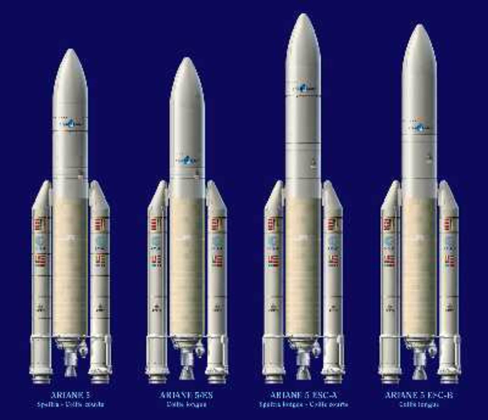
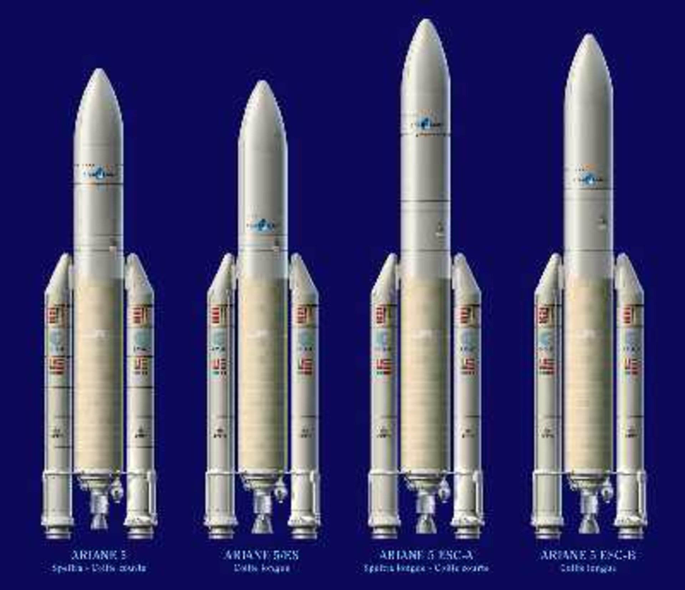

Parker solar probe
Eningeering and science
For the first time in human history on April 28, 2021 the parker solar space probe went sweeping trough the super heated particles of the Corona of sun. A significant event that has provided scientists with vital information of our closest star, that may help us shed light on its mysteries. The sun’s atmosphere much like our own The Sun’s atmosphere, much like our own is composed of layers. Where we have the troposphere, stratosphere, and mesosphere, the sun has the photosphere, the chromosphere and the corona. Some people use the saying, “hotter than the surface of the sun”, but the photosphere is not very hot. It is roughly 6500 kelvin at the bottom of photosphere and about 4000 kelvin at the the of it. For reference the temperature of the air around a lighting bolt would be 5x times hotter than the photosphere. An interesting fact about this is that the outermost layer of the sun the Corona can reach temperatures much hotter. This layer starts at 2100 kilometers above the surface of the sun, and is about 80 times hotter than the surface. This anomaly is myertery, you can compare this to if you walk away from a fire and it getting hotter. This makes the Parker Solar probe achievement even more impressive. Seemingly it is easy to dismiss the probe only went through the upper atmosphere, but in reality the upper atmosphere is vastly hotter than the surface. The reasons for this is a unsolved mystery of the universe. Therefore is one of the primary missions for the parker space probe. To gather information on the magnetic fields and charged particles in this region, to attempt the answer this question. To understand more about the achievements of the space probe. We will now talk about the engineering and physics of its missions. The first issue that the scientists had to slove is how do they reach the sun. You might think that this is easy just do the same thing that brings satellites back from earth’s orbit. We can do this but the sun is 1 au(astronomical unit) away from the earth. A problem for this is that the earth is orbiting the sun at 30 km per second. Which means everything that is launching from the earth will have the same orbital velocity of 30 km per second. This means that in order to achieve a tighter orbit to the sun we need to lower the space crafts orbital velocity. If we want to first get the probe in earth’s orbit this will require us to accelerate at 9.2 km per second(this is relative to the earth’s surface). The probe is now in orbit around the earth traveling with at 30 km per second around the sun. From here will have to make a orbital maneuver also known as a hohmann transfer. Where we either change the space crafts orbital velocity to make the closest approach to the sun(perihelion), or to change the aphelion so that the furthest approach from the Sun. To visit a outer planet like mars we want to increase the aphelion by adding to the spacecraft’s orbital velocity. While on the other hand to reach an inner planet requires us to reduce out perihelion by reducing our orbital energy. To reach a place like mars we need a ∆v(delta v) of 2.9 and to reach venus we will need a ∆v of 2.5. If we calculate the ∆v of 21.4 over 8.5 times greater than the ∆v to reach venus. This ∆v is higher than any other rocket was made to reach before. The probe launched on the delta IV the world’s second highest capacity rocket in the world only second to the flacon heavy. Though to give it a extra push it was fitted with a extra special solid rocket motor in the third stage providing an additional 3 kilometers per second of delta v the rocket was originally 2 stages. Even with this added power the probe wouldn’t be able to get close to the sun. Therefore to get to the delta v required the probe did 5 flybys of venus. This number of flybys was needed because venus is a relatively low mass planet. The magnitude of velocity change a planet can provide is largely determined by the gravity of it and that is determined by its mass In fact the original plan for the probe was to do a single planetary assist with jupiter, which would have brought the probe three times closer to the sun. They didn’t do this since the jupiter’s orbit is so much further from the sun, the sunlight reacher the solar panels at its aphelion would have been 25 times dimmer requiring much larger solar panels to power the spacecraft. This is a issue when the sace craft wakes it way around jupiter and closer to the sun. The heat of the sun would destroy the solar panels. The size that is is right now would make it retractable but at that size it wouldn’t be. Another, reasons that scientists understood for this decision is with Jupiter the probe would have had just 100 hours inside the desired zone around the sun, completing just 2 solar passes before the probe reached the end of it’s mission duration. For the venus plan the spacecraft would take less than 150 days to complete its orbit around the sun, allowing scientists to gain over 900 hours of data over the probe’s 24 orbits around the Sun. This new plan lead to a new design the original design was more conical shaped heat shield to the familiar compact flat shield. This shield is primarily constructed with carbon foam. A truly fascinating materia. Developed by one of the most prolific material innovation labs ultramet. The material is 97% open space providing the heat shield fantastic insulation properties, while also benefiting the carbon’s thermal stability. Next, a carbon composite which is made by combining graphite with an organic binder, such as a epoxy resin. This mixture was applied to each side of the foam, before being super heated to transform the binder into a pure form of carbon. Resting a carbon composite, finally, a white ceramic paint was applied to the sun facing side to reflect as much heat away from the heat shield before it had a chance to even the maze of carbon beneath. From here the rest of the spacecraft besides a few specialized sensors and solar panels, had to fit in the umbrella or the shadow of the heat shield. There are some instruments that bravel stick out beyond the safety of the shield. Most impressive bit of technology abroad. Completely unprotected by the sunshield is solar probe cup. Its designers had to get very creative with materials. The solar probe cup is a device that can count and measure the properties of electron and ions coming from the Sun. essentially giving the space craft the capability of studying the solar wind and mass ejections of particles coming from the sun. The first challenge was selecting a material for the electric grid that generates the selecting electric field at the entrance of the cup. THis grid needed to be conductive resistant, while also being machinable to create the tiny 100 micron spaced grid. The material that was chosen was tungsten, the same material used in incandescent light bulbs. As they are capable of surviving the extremely high temperatures needed to generate light. Tungsten light filaments operate at temperatures as 3000 degrees celsius so are more than capable of surviving these temperatures, however machining tungsten into this grid shape is difficult. To cut the metal to micron precision they need to used acid etching since lasers and tools wouldn’t be efficient. The solar panels are the next challenge. While cruising around the sun the space craft can fully deploy it’s solar panels without issue. As the probe begins its sweep towards the sun heat will become a evergrowning issue. This can be countered by retracting the solar panels but the probe need some power to maintain the scientific equipment during this vital stage of flight. When this is the case two smaller secondary panels are activated these are cooled by water throughout the solar panels and into the black radiators attached to the titanium truss below the sunshield. Most sensors are for the scientists at nasa to look at and be amazed but there is one thing that we can all enjoy. During a solar eclipse we can observe a beautiful phenomenon, bright loops of light dancing around the sun. These fantastic patterns are cerated by glowing electron, sailing around the sun on magnetic field lines, distorted by solar winds. We have been able to observe the streams of high energy electrons from earth and our solar observatories parked at lagrange 1. As parker space probe dipped into the corona for its ninth encounter with the sun. It began recording from its wide view imager, here on the spacecraft. The images delivered looks like driving in a snowstorm at night. These are no doubt giving scientists much data. As another day goes scientists work harder and harder to make amazing things that everyone can benefit from you can learn more about these awesome things in this blog.
 
